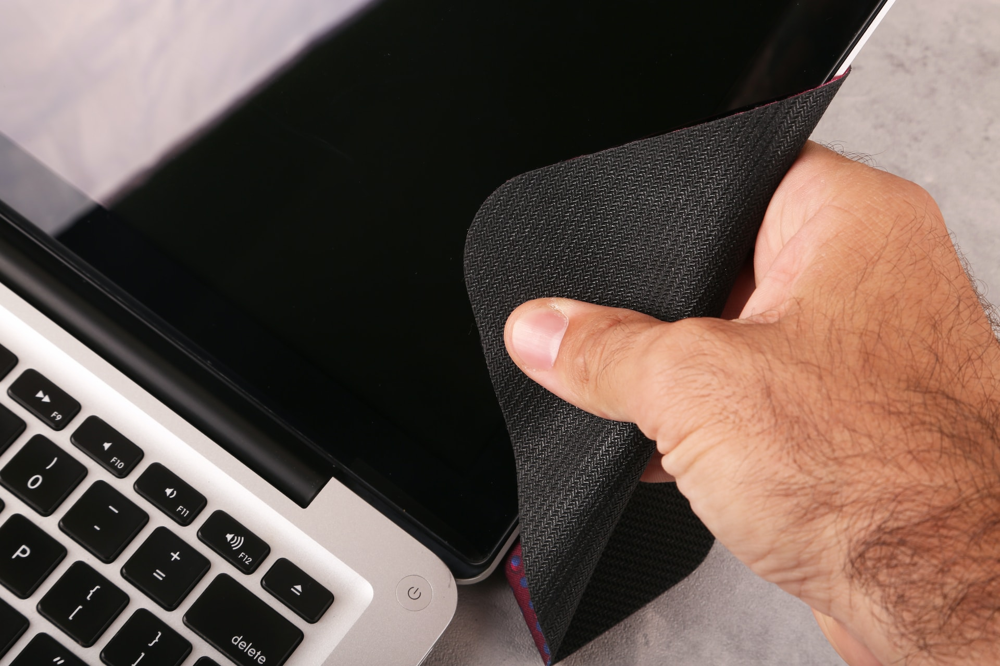

Podstawowe wskazówki
 Proste czyszczenie polega na usunięciu kurzu i innych zabrudzeń z wnętrza naszego komputera, które powstają w wyniku użytkowania. Najczęściej przedmuchujemy radiatory od chłodzenia, oraz wentylatory np - od chłodzenia procesora oraz karty graficznej. Dobrze jest wyjąć filtry i wyczyścić je z zalegającego kurzu, dzięki czemu poprawimy przepływ powietrza. Oto wskazówki dzięki którym możesz przeprowadzić proste czyszczenie.
1.
Zaoptarz się w sprężone powietrze oraz szmatkę która nie pozostawia mirkowłókien.
2.
Jeśli twoja obudowa posiada filtry poowietrza, wyciągnij je i wyczyść sprężonym powietrzem lub pod bieżącą wodą i zostaw do wyschnięcia.
3.
Przetrzyj lekko wilgotną szmatką ścianki obudowy, uważając na komponenty.
4.
Przedmuchaj wentylatory, wnętrze obudowy, radiatory, płytę główną i inne miejsca w których widzisz kurz.
5.
Możesz też wyciągnąć wentylatory z chłodzeń oraz obudowy i dokładnie wytrzeć łopatki.
6.
Na koniec, załóż części które zdemontowałeś podczas czyszczenia.
Przed czyszczeniem płyty głównej warto sprawdzić gdzie znajdują się radiatory, po długim czasie może okazać się że, termopady pod nimi będą wymagały wymiany.
1.
Zaoptarz się w sprężone powietrze oraz pędzelek.
2.
Przedmuchaj dokładnie całą płytę, zakamarki w których znajduje się kurz lub inne zanieczyszczenia delikatnie usuń pędzelkiem.
3.
Jeśli twoja płyta utraciła gwarancję i osiąga wysokie temperatury, wymień termopady pod radiatorami. JEŚLI TWOJA PŁYTA POSIADA GWARANCJĘ, WYMIANA TERMOPADÓW MOŻE WIĄZAĆ SIĘ Z UTRATĄ GWARANCJI!
1.
Alkohol izopropylowy aby usunać starą pastę termoprzewodzącą z ihs procesora oraz radiatora.
2.
Sciereczkę z mikrofibry aby zetrzeć resztki pasty z procesora.
3.
Sprężone powietrze aby usunąć kurz z chłodzenia.
4.
Nowa pasta termoprzewodząca. Przed zakupem sprawdź różnych producentów i właściowści poszczególnych past.
1.
Przed przystąpieniem do ściągania chłodzenia warto włączyć komputer na np. 15/30 min aby pasta nabrała temperatury i była bardziej ciekła.
2.
Odkręć chłodzenie i odłóż gdzieś obok. UWAGA JEŚLI WYKONAŁEŚ KROK NR 1 TO UWAŻAJ PODCZAS ZDEJMOWANIA CHŁODZENIA. MOŻE ONO NABRAĆ WYSOKICH TEMPERATUR.
3.
Nalej troszkę alkoholu izopropylowego na ścierkę i delikatnie spróbuj ścierać starą pastę.
4.
Wyczyść ihs i radiator aż nie usuniesz całej pasty.
1.
Sprawdź metody nakładania pasty, np poprzez łopatkę, na "ziarno grochu" lub "x". Podczas nakładania pasty na ihs uważaj aby nie nałożyć za mało ani za dużo pasty.
2.
Nałóż chłodzenie, przykręć delikatnie śrubki po przekątnej.
3.
Włącz komputer i sprawdź temperatury aby upewnić się, że cały proces został wykonany poprawnie
Przed czyszczeniem płyty głównej warto sprawdzić jakie termopady posiada nasz model karty graficznej. JEŚLI TWOJA KARTA POSIADA GWARANCJĘ, NIE WYKONUJ SAMODZIELNIE CZYSZCZENIA! MOŻESZ W TEN SPOSÓB UTRACIĆ GWARANCJĘ!
1.
Zaoptarz się w sprężone powietrze, pędzelek, alkohol izopropylowy, termopady o określonej grubości oraz pastę termoprzewodzącą.
2.
Zdejmij backplate jeśli twoja karta go posiada oraz rozkręć chłodzenia i zdejmij radiator.
3.
Usuń stare termopady oraz starą pastę termoprzewodzącą z rdzenia karty graficznej.
4.
Dokładnie wyczyść kartę i jej chłodzenie z kurzu.
5.
Gdy miejsca w których były termopady oraz pasta są idelanie czyste, nałóż nowe termopady i pastę.
6.
Ostrożnie załóż chłodzenie i backplate.